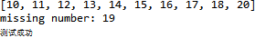
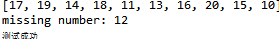

Hello World
Welcome to Hexo! This is your very first post. Check documentation for more info. If you get any problems when using Hexo, you can find the answer in troubleshooting or you can ask me on GitHub.
Quick Start
Create a new post
1 | $ hexo new "My New Post" |
More info: Writing
Run server
1 | $ hexo server |
More info: Server
Generate static files
1 | $ hexo generate |
More info: Generating
Deploy to remote sites
1 | $ hexo deploy |
More info: Deployment
java求质数的方法
从1到N全部遍历， 当这个数只能被1和n整除它就是素数
1 | /** |
筛选法求素数
筛数法求素数的基本思想是：把从1开始的、某一范围内的正整数从小到大顺序排列， 1不是素数，首先把它筛掉。剩下的数中选择最小的数是素数，然后去掉它的倍数。依次类推，直到筛子为空时结束。1 | public void printPrimes(int n){ |
6N+-1法求素数
任何一个自然数，总可以表示成为如下的形式之一： 6N，6N+1，6N+2，6N+3，6N+4，6N+5 (N=0，1，2，…) 显然，当N≥1时，6N，6N+2，6N+3，6N+4都不是素数，只有形如6N+1和6N+5的自然数有可能是素数。所以，除了2和3之外，所有的素数都可以表示成6N±1的形式(N为自然数)。 根据上述分析，我们只对形如6 N±1的自然数进行筛选，这样就可以大大减少筛选的次数，从而进一步提高程序的运行效率和速度。 以下代码需要自然数大于10 。1 | public int[] getPrimes(int n){ |
file对象
file对象
在计算机系统中，文件是非常重要的存储方式。Java的标准库java.io提供了File对象来操作文件和目录。
要构造一个File对象，需要传入文件路径：
1 | import java.io.*; |
构造File对象时，既可以传入绝对路径，也可以传入相对路径。绝对路径是以根目录开头的完整路径，例如：
1 | File f = new File("C:\\Windows\\notepad.exe"); |
注意Windows平台使用\作为路径分隔符，在Java字符串中需要用\表示一个\。Linux平台使用/作为路径分隔符：
1 | File f = new File("/usr/bin/javac"); |
传入相对路径时，相对路径前面加上当前目录就是绝对路径：
// 假设当前目录是C:\Docs
1 | File f1 = new File("sub\\javac"); // 绝对路径是C:\Docs\sub\javac |
可以用.表示当前目录，..表示上级目录。
File对象有3种形式表示的路径，一种是getPath()，返回构造方法传入的路径，一种是getAbsolutePath()，返回绝对路径，一种是getCanonicalPath，它和绝对路径类似，但是返回的是规范路径。
什么是规范路径？我们看以下代码：
1 | import java.io.*; |
绝对路径可以表示成C:\Windows\System32..\notepad.exe，而规范路径就是把.和..转换成标准的绝对路径后的路径：C:\Windows\notepad.exe。
因为Windows和Linux的路径分隔符不同，File对象有一个静态变量用于表示当前平台的系统分隔符：
1 | System.out.println(File.separator); // 根据当前平台打印"\"或"/" |
文件和目录
File对象既可以表示文件，也可以表示目录。特别要注意的是，构造一个File对象，即使传入的文件或目录不存在，代码也不会出错，因为构造一个File对象，并不会导致任何磁盘操作。只有当我们调用File对象的某些方法的时候，才真正进行磁盘操作。
例如，调用isFile()，判断该File对象是否是一个已存在的文件，调用isDirectory()，判断该File对象是否是一个已存在的目录：
1 | import java.io.*; |
用File对象获取到一个文件时，还可以进一步判断文件的权限和大小：
1 | boolean canRead()：是否可读； |
对目录而言，是否可执行表示能否列出它包含的文件和子目录。
创建和删除文件
当File对象表示一个文件时，可以通过createNewFile()创建一个新文件，用delete()删除该文件：1 | File file = new File("/path/to/file"); |
有些时候，程序需要读写一些临时文件，File对象提供了createTempFile()来创建一个临时文件，以及deleteOnExit()在JVM退出时自动删除该文件。
1 | import java.io.*; |
遍历文件和目录
当File对象表示一个目录时，可以使用list()和listFiles()列出目录下的文件和子目录名。listFiles()提供了一系列重载方法，可以过滤不想要的文件和目录：1 | import java.io.*; |
和文件操作类似，File对象如果表示一个目录，可以通过以下方法创建和删除目录：
boolean mkdir()：创建当前File对象表示的目录；
boolean mkdirs()：创建当前File对象表示的目录，并在必要时将不存在的父目录也创建出来；
boolean delete()：删除当前File对象表示的目录，当前目录必须为空才能删除成功。
Path
Java标准库还提供了一个Path对象，它位于java.nio.file包。Path对象和File对象类似，但操作更加简单：
1 | import java.io.*; |
如果需要对目录进行复杂的拼接、遍历等操作，使用Path对象更方便。
练习
请利用File对象列出指定目录下的所有子目录和文件，并按层次打印。 例如，输出：1 | Documents/ |
练习代码:
1 | import java.io.File; |
总结:java的文件系统其实和python的差不多嘛，感觉面向对象语言有些东西大同小异，java也有解释器，也有列表和堆栈，只不过java的堆栈是用双端列队列即deque实现的，因为Java没有单独的stack接口
java-使用list
在集合类中，List是最基础的一种集合：它是一种有序链表。
List的行为和数组几乎完全相同：List内部按照放入元素的先后顺序存放，每个元素都可以通过索引确定自己的位置，List的索引和数组一样，从0开始。
数组和List类似，也是有序结构，如果我们使用数组，在添加和删除元素的时候，会非常不方便。例如，从一个已有的数组{‘A’, ‘B’, ‘C’, ‘D’, ‘E’}中删除索引为2的元素：
┌───┬───┬───┬───┬───┬───┐
│ A │ B │ C │ D │ E │ │
└───┴───┴───┴───┴───┴───┘
│ │
┌───┘ │
│ ┌───┘
│ │
▼ ▼
┌───┬───┬───┬───┬───┬───┐
│ A │ B │ D │ E │ │ │
└───┴───┴───┴───┴───┴───┘
这个“删除”操作实际上是把’C’后面的元素依次往前挪一个位置，而“添加”操作实际上是把指定位置以后的元素都依次向后挪一个位置，腾出来的位置给新加的元素。这两种操作，用数组实现非常麻烦。
因此，在实际应用中，需要增删元素的有序列表，我们使用最多的是ArrayList。实际上，ArrayList在内部使用了数组来存储所有元素。例如，一个ArrayList拥有5个元素，实际数组大小为6（即有一个空位）：
size=5
┌───┬───┬───┬───┬───┬───┐
│ A │ B │ C │ D │ E │ │
└───┴───┴───┴───┴───┴───┘
当添加一个元素并指定索引到ArrayList时，ArrayList自动移动需要移动的元素：
size=5
┌───┬───┬───┬───┬───┬───┐
│ A │ B │ │ C │ D │ E │
└───┴───┴───┴───┴───┴───┘
然后，往内部指定索引的数组位置添加一个元素，然后把size加1：
size=6
┌───┬───┬───┬───┬───┬───┐
│ A │ B │ F │ C │ D │ E │
└───┴───┴───┴───┴───┴───┘
继续添加元素，但是数组已满，没有空闲位置的时候，ArrayList先创建一个更大的新数组，然后把旧数组的所有元素复制到新数组，紧接着用新数组取代旧数组：
size=6
┌───┬───┬───┬───┬───┬───┬───┬───┬───┬───┬───┬───┐
│ A │ B │ F │ C │ D │ E │ │ │ │ │ │ │
└───┴───┴───┴───┴───┴───┴───┴───┴───┴───┴───┴───┘
现在，新数组就有了空位，可以继续添加一个元素到数组末尾，同时size加1：
size=7
┌───┬───┬───┬───┬───┬───┬───┬───┬───┬───┬───┬───┐
│ A │ B │ F │ C │ D │ E │ G │ │ │ │ │ │
└───┴───┴───┴───┴───┴───┴───┴───┴───┴───┴───┴───┘
可见，ArrayList把添加和删除的操作封装起来，让我们操作List类似于操作数组，却不用关心内部元素如何移动。
我们考察List
在末尾添加一个元素：void add(E e)
在指定索引添加一个元素：void add(int index, E e)
删除指定索引的元素：int remove(int index)
删除某个元素：int remove(Object e)
获取指定索引的元素：E get(int index)
获取链表大小（包含元素的个数）：int size()
但是，实现List接口并非只能通过数组（即ArrayList的实现方式）来实现，另一种LinkedList通过“链表”也实现了List接口。在LinkedList中，它的内部每个元素都指向下一个元素：
┌───┬───┐ ┌───┬───┐ ┌───┬───┐ ┌───┬───┐HEAD ──>│ A │ ●─┼──>│ B │ ●─┼──>│ C │ ●─┼──>│ D │ │
└───┴───┘ └───┴───┘ └───┴───┘ └───┴───┘
List的特点
使用List时，我们要关注List接口的规范。List接口允许我们添加重复的元素，即List内部的元素可以重复：
1
2
3
4
5
6
7
8
9
10
11
import java.util.ArrayList;
import java.util.List;
public class Main {
public static void main(String[] args) {
List<String> list = new ArrayList<>();
list.add("apple"); // size=1
list.add("pear"); // size=2
list.add("apple"); // 允许重复添加元素，size=3
System.out.println(list.size());
}
}
1 | import java.util.ArrayList; |
List还允许添加null：
1 | import java.util.ArrayList; |
创建List
除了使用ArrayList和LinkedList，我们还可以通过List接口提供的of()方法，根据给定元素快速创建List：
1 | List<Integer> list = List.of(1, 2, 5); |
但是List.of()方法不接受null值，如果传入null，会抛出NullPointerException异常。
遍历List
1 | import java.util.List; |
但这种方式并不推荐，一是代码复杂，二是因为get(int)方法只有ArrayList的实现是高效的，换成LinkedList后，索引越大，访问速度越慢。
所以我们要始终坚持使用迭代器Iterator来访问List。Iterator本身也是一个对象，但它是由List的实例调用iterator()方法的时候创建的。Iterator对象知道如何遍历一个List，并且不同的List类型，返回的Iterator对象实现也是不同的，但总是具有最高的访问效率。
Iterator对象有两个方法：boolean hasNext()判断是否有下一个元素，E next()返回下一个元素。因此，使用Iterator遍历List代码如下：
1 | import java.util.Iterator; |
有童鞋可能觉得使用Iterator访问List的代码比使用索引更复杂。但是，要记住，通过Iterator遍历List永远是最高效的方式。并且，由于Iterator遍历是如此常用，所以，Java的for each循环本身就可以帮我们使用Iterator遍历。把上面的代码再改写如下：
1 | import java.util.List; |
上述代码就是我们编写遍历List的常见代码。
实际上，只要实现了Iterable接口的集合类都可以直接用for each循环来遍历，Java编译器本身并不知道如何遍历集合对象，但它会自动把for each循环变成Iterator的调用，原因就在于Iterable接口定义了一个Iterator
List和Array转换
把List变为Array有三种方法，第一种是调用toArray()方法直接返回一个Object[]数组：1 | import java.util.List; |
这种方法会丢失类型信息，所以实际应用很少。
第二种方式是给toArray(T[])传入一个类型相同的Array，List内部自动把元素复制到传入的Array中：
1 | import java.util.List; |
注意到这个toArray(T[])方法的泛型参数
1 | import java.util.List; |
但是，如果我们传入类型不匹配的数组，例如，String[]类型的数组，由于List的元素是Integer，所以无法放入String数组，这个方法会抛出ArrayStoreException。
如果我们传入的数组大小和List实际的元素个数不一致怎么办？根据List接口的文档，我们可以知道：
如果传入的数组不够大，那么List内部会创建一个新的刚好够大的数组，填充后返回；如果传入的数组比List元素还要多，那么填充完元素后，剩下的数组元素一律填充null。
实际上，最常用的是传入一个“恰好”大小的数组：
1 | Integer[] array = list.toArray(new Integer[list.size()]); |
这种函数式写法我们会在后续讲到。
反过来，把Array变为List就简单多了，通过List.of(T…)方法最简单：
1 | Integer[] array = { 1, 2, 3 }; |
对于JDK 11之前的版本，可以使用Arrays.asList(T…)方法把数组转换成List。
要注意的是，返回的List不一定就是ArrayList或者LinkedList，因为List只是一个接口，如果我们调用List.of()，它返回的是一个只读List：
1 | import java.util.List; |
对只读List调用add()、remove()方法会抛出UnsupportedOperationException。
练习
给定一组连续的整数，例如：10，11，12，……，20，但其中缺失一个数字，试找出缺失的数字：1 | import java.util.*; |
运行结果:

增强版：和上述题目一样，但整数不再有序，试找出缺失的数字：
1 | public class Main { |
运行结果:

这是两个基本的list的算法题，在leetcode上好像遇到过，这是一个两种情况都能直接使用的方法
关于java 泛型-擦拭法
最近要工作了，复习了一下java的基础知识，最近看到泛型，有些记下笔记，关于泛型的擦拭法
泛型是一种类似”模板代码“的技术，不同语言的泛型实现方式不一定相同。
Java语言的泛型实现方式是擦拭法（Type Erasure）。
所谓擦拭法是指，虚拟机对泛型其实一无所知，所有的工作都是编译器做的。
例如，我们编写了一个泛型类Pair
1 | public class Pair<T> { |
而虚拟机根本不知道泛型。这是虚拟机执行的代码：
1 | public class Pair { |
因此，Java使用擦拭法实现泛型，导致了：
编译器把类型
编译器根据
使用泛型的时候，我们编写的代码也是编译器看到的代码：
1 | Pair<String> p = new Pair<>("Hello", "world"); |
所以，Java的泛型是由编译器在编译时实行的，编译器内部永远把所有类型T视为Object处理，但是，在需要转型的时候，编译器会根据T的类型自动为我们实行安全地强制转型。
了解了Java泛型的实现方式——擦拭法，我们就知道了Java泛型的局限：
局限一：
1 | Pair<int> p = new Pair<>(1, 2); // compile error! |
局限二：无法取得带泛型的Class。观察以下代码：
1 | public class Main { |
因为T是Object，我们对Pair
换句话说，所有泛型实例，无论T的类型是什么，getClass()返回同一个Class实例，因为编译后它们全部都是Pair
局限三：无法判断带泛型的Class：
1 | Pair<Integer> p = new Pair<>(123, 456); |
原因和前面一样，并不存在Pair
局限四：不能实例化T类型
1 | public class Pair<T> { |
上述代码无法通过编译，因为构造方法的两行语句：
1 | first = new T(); |
这样一来，创建new Pair
要实例化T类型，我们必须借助额外的Class
1 | public class Pair<T> { |
上述代码借助Class
1 | Pair<String> pair = new Pair<>(String.class); |
因为传入了Class
不恰当的覆写方法
有些时候，一个看似正确定义的方法会无法通过编译。例如：
1 | public class Pair<T> { |
这是因为，定义的equals(T t)方法实际上会被擦拭成equals(Object t)，而这个方法是继承自Object的，编译器会阻止一个实际上会变成覆写的泛型方法定义。
换个方法名，避开与Object.equals(Object)的冲突就可以成功编译：
1 | public class Pair<T> { |
泛型继承
一个类可以继承自一个泛型类。例如：父类的类型是Pair
1 | public class IntPair extends Pair<Integer> { |
使用的时候，因为子类IntPair并没有泛型类型，所以，正常使用即可：
1 | IntPair ip = new IntPair(1, 2); |
前面讲了，我们无法获取Pair
但是，在父类是泛型类型的情况下，编译器就必须把类型T（对IntPair来说，也就是Integer类型）保存到子类的class文件中，不然编译器就不知道IntPair只能存取Integer这种类型。
在继承了泛型类型的情况下，子类可以获取父类的泛型类型。例如：IntPair可以获取到父类的泛型类型Integer。获取父类的泛型类型代码比较复杂：
1 | import java.lang.reflect.ParameterizedType; |
因为Java引入了泛型，所以，只用Class来标识类型已经不够了。实际上，Java的类型系统结构如下：
┌────┐
│Type│
└────┘
▲
│ ┌────────────┬────────┴─────────┬───────────────┐
│ │ │ │
┌─────┐┌─────────────────┐┌────────────────┐┌────────────┐
│Class││ParameterizedType││GenericArrayType││WildcardType│
└─────┘└─────────────────┘└────────────────┘└────────────┘
小结
Java的泛型是采用擦拭法实现的；
擦拭法决定了泛型
不能是基本类型，例如：int；
不能获取带泛型类型的Class，例如：Pair
不能判断带泛型类型的类型，例如：x instanceof Pair
不能实例化T类型，例如：new T()。
泛型方法要防止重复定义方法，例如：public boolean equals(T obj)；
子类可以获取父类的泛型类型
参考自廖大大的博客
论头条论头条回答什么样的电影是好电影被和谐一事
首先把我的回答复制粘贴过来：
对于电影的看法，我有两个阶段
第一阶段：看豆瓣电影评分然后再去看电影，评分7.0以上的电影，感兴趣的方面我都会去看一看，也就是我所认为的好电影。评分大多数也都符合实际情况。当时在我看来，好电影有如下诸多特点，有几个做到就算很不错的电影了：
首先仅从电影表意来说～
1.故事情节紧凑，扣人心弦，不掉链子。简单来说就是讲好一件事情，不管你是使用顺叙，倒叙还是插叙。比如年前的《误杀》，暑期档的《哪吒之魔童降世》，都是能够把故事讲好的电影。这些另当别论，当然还有我很喜欢的阿加莎作品翻拍的电影如《尼罗河上的惨案》以及《东方快车谋杀案》无一不是把故事讲好的作品
2.能够突出电影的主题。一个好电影不能仅仅是无厘头的搞笑和一些恶趣味的烂梗。比如《李茶的姑妈》之类，我认为就是烂片，而我认为既搞笑又无厘头又能够突出主题，发人深省的电影也就星爷的那几部了。
3.镜头的剪辑，拍摄画面的光线，采光，画面的饱和度。
举几个例子，像张艺谋之前拍的《大红灯笼高高挂》，《红高粱》，就充分展现了镜头画面的魅力，灯笼，四合院，拍摄的院子整整齐齐，完完全全的表现出自古以来国人所要求的工整，对仗之美。像黑泽明的《梦》，画面之奇幻又具有本土特色，更是能够展现日本的“物哀”之美。
其次从电影所传达的思想和内容来说～
1.不论是什么类型的电影，传达的思想一定要是真实的。我觉得真实的思想不一定是社会所要求的正面的思想。这样才能使观众产生共鸣。人不是神，都会有负面能量，有人想拯救世界，有人想报复社会。2019年一部《小丑》就充分展现了一部负能量电影的张力，这部电影出乎意料的获得了成功，但所表达的思想却不能够被社会主义大国搬到大荧幕上来，当然还有同时的《寄生虫》，以及我很喜欢的导演姜文的《鬼子来了》。积极正能量的电影我就不说了，社会主义大国量产，多的是.
2.电影是生活的剪辑，杨德昌曾经说过，“电影将人类的寿命延长了三倍”。所以好的电影也是贴近生活的电影。我所喜欢的导演杨德昌，导演的几部电影也很有生活气息，比如他的最后一部作品《一一》，以及《牯岭街少年杀人事件》，《海滩的一天》，《冬冬的假期》都有表现出家庭生活的气息，能够让很多观众都能从中找到自己生活的影子。当然家庭生活电影最值得一提的当然是是枝裕和导演。如果说看观看好莱坞大片时，我们的生活几乎暂停了两三个小时，那么在看是枝裕和的电影时，我们是没有离开过生活的。
3.好电影可以作为一种预言，一种警示，一种陈述事实的
载体。预言从何说起？从《2001太空漫游》到人类真的实现太空行走，到现在的各种题材的科幻片《火星救援》，《流浪地球》（个人并不认为流量地球特别好😊，但由于是大国第一部硬科幻，那就给个及格分了🐶）。警示从何说起？《V字仇杀队》，《一九八四》，《素媛》，《熔炉》。何为陈述事实反思当下？《一九四二》的大饥荒，《切尔诺贝利》的核泄漏，都是希望人们能够从历史这面镜子中看清楚人类的本性，以免重蹈覆辙
第二阶段，自己找自己喜欢的类型的电影，不去看电影评分先把电影过一遍，发现有很多小众电影以及被误评的电影。现在豆瓣社区水军严重，一些电影的评分已经不能合理的表现出这部电影的质量了。小众电影虽然无人问津，但并不妨碍它质量很不错。比如我喜欢的伍迪艾伦的《午夜巴黎》，《午夜巴塞罗那》，看起来就饶有趣味，当然午夜巴黎需要了解一些海明威，毕加索，菲茨杰拉德等人在巴黎的那段时间的事情。还有一些音乐电影比如《begin again》（我最喜欢的音乐电影），当然还有最让我热血澎湃的《波西米亚狂想曲》！还有爱的三部曲，都是上乘之作。
然后马上就被审查和谐了，我觉得我写的并没有哪里有问题，相反，大国的审查体制以及限制思想言论的方式和程度依旧是一个落后国家的表现。近日又由李文亮医生事件所引发的一系列思考，真的是让人感慨万千。李文亮医生作为一个敲响警钟的人，却被派出所命令不可散布谣言。家里人也劝说我不要在这种事情上有过多的看法，做好自己小老百姓过好日子就好了，但我是知识分子，一个读书人，这种事情怎么能不闻不问。并且，如果每个人都这样想，那么这个国家就永远会是一个没有言论自由的国家。总有些傻逼说你们要自由干涉么。你们要言论自由干什么。没有言论自由的国家，怎么可能有吹哨人，吹了以后怎么传播出去》当猴群酣睡的时候，放哨的是猴子吹哨提醒大家危险将近，结果却被毒打，这样的猴群怎么可能不被灭绝？说真话，让人说话的意义，就这么大，关乎每个人的生命啊
万历十五年
第二章 首辅申时行
他所期望的不外是 “不肖者犹知忌惮，而贤者有所归依”
第三章 世间已无张居正
身为天子的万历，在另一种意义上讲，他不过是紫禁城中的一名囚徒。他的权力带有被动性。他可以把他不喜欢的官员革职查办，但是很难升迁提拔他所喜欢的官员，以致没有一个人足以成为他的心腹。大小臣僚期望他以自己的德行而不是权力对国家做出贡献。但是德行意味着什么呢？张居正在世之日，皇帝在首辅及老师的控制之下作为抽象的道德和智慧的代表，所谓德行大部分体现在各种礼仪之中。他要忍受各种礼仪的苦闷与单调，这也许是人们所能够理解的。但是几乎很少有人理解的是他最深沉的苦闷尚在无情的礼仪之外。皇位是一种社会制度，他朱翊钧是一个有血有肉的个人。一登皇位，他的全部言行都要符合道德规范，但是道德规范的解释却属于文官。他不被允许能和他的臣僚一样，在阳之外另外存在着阴，他纸被拘束是无限的，任何个性的表露都有可能被指责为逾越道德规范
关于Python装饰器的一些理解
理解Python装饰器
今天在写django Learning_log的时候用到了装饰器，就回想起之前在学习python的时候学习过装饰器，但很快又忘记了装饰器的用法和作用了，这次正好又温习了一遍，也来做个笔记.Python装饰器看起来类似Java中的注解，然鹅和注解并不相同，不过同样能够实现面向切面编程。想要理解Python中的装饰器，不得不先理解闭包（closure）这一概念。 闭包 看看维基百科中的解释：1 | 在计算机科学中，闭包（英语：Closure），又称词法闭包（Lexical Closure）或函数闭包（function closures），是引用了自由变量的函数。这个被引用的自由变量将和这个函数一同存在，即使已经离开了创造它的环境也不例外。 |
1 | # print_msg是外围函数 |
msg是一个局部变量，在print_msg函数执行之后应该就不会存在了。但是嵌套函数引用了这个变量，将这个局部变量封闭在了嵌套函数中，这样就形成了一个闭包。
结合这个例子再看维基百科的解释，就清晰明了多了。闭包就是引用了自有变量的函数，这个函数保存了执行的上下文，可以脱离原本的作用域独立存在。
下面来看看Python中的装饰器。
装饰器
一个普通的装饰器一般是这样：
1 | import functools |
这样就定义了一个打印出方法名及其参数的装饰器。
调用之：
1 |
|
输出
1 | call test(): |
装饰器在使用时，用了@语法，让人有些困扰。其实，装饰器只是个方法，与下面的调用方式没有区别：
1 | def test(p): |
@语法只是将函数传入装饰器函数，并无神奇之处。
值得注意的是@functools.wraps(func)，这是python提供的装饰器。它能把原函数的元信息拷贝到装饰器里面的 func 函数中。函数的元信息包括docstring、name、参数列表等等。可以尝试去除@functools.wraps(func)，你会发现test.name的输出变成了wrapper。
带参数的装饰器
装饰器允许传入参数，一个携带了参数的装饰器将有三层函数，如下所示：
1 | import functools |
看到这个代码是不是又有些疑问，内层的decorator函数的参数func是怎么传进去的？和上面一般的装饰器不大一样啊。
其实道理是一样的，将其@语法去除，恢复函数调用的形式一看就明白了：
1 | # 传入装饰器的参数，并接收返回的decorator函数 |
输出结果与正常使用装饰器相同：
1 | call test_with_param(): |
至此，装饰器这个有点费解的特性也没什么神秘了。
装饰器这一语法体现了Python中函数是第一公民，函数是对象、是变量，可以作为参数、可以是返回值，非常的灵活与强大。
Python中引入了很多函数式编程的特性，需要好好学习与体会。
参考自理解装饰器